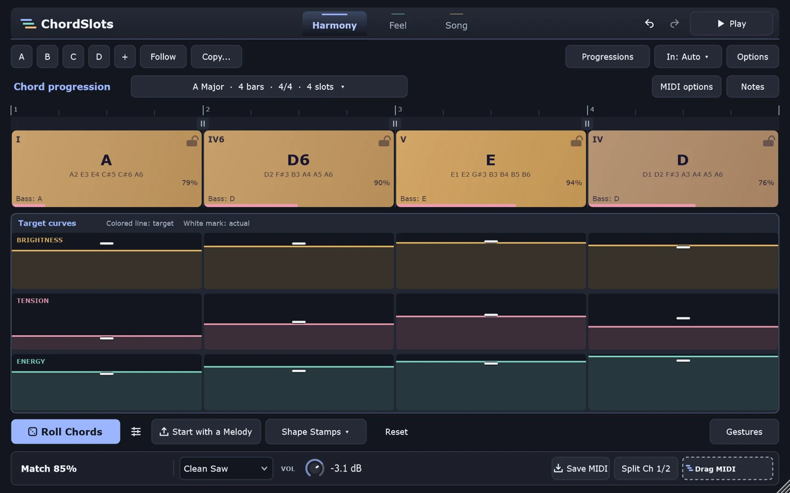
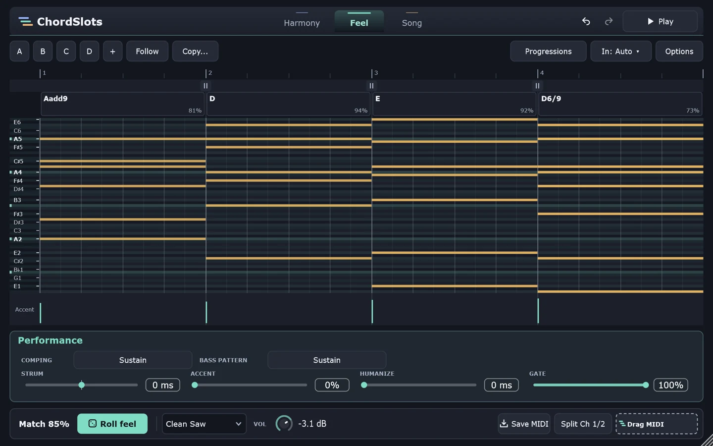
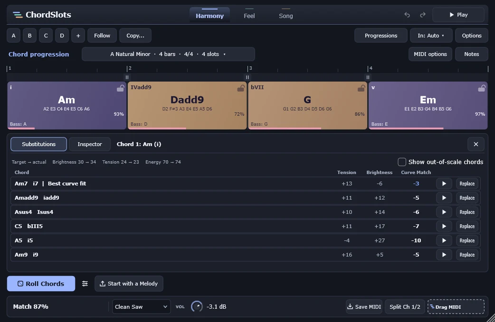
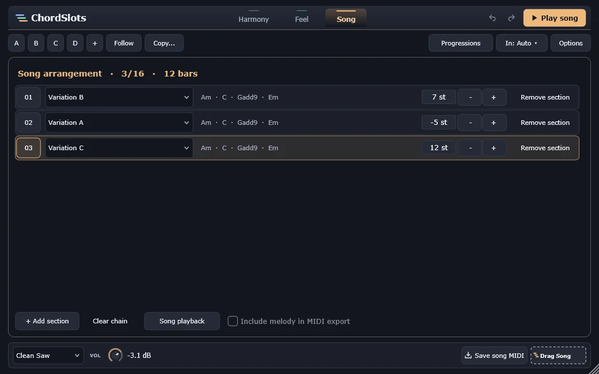

Shape the whole loop
Build tension into the last two bars, brighten a chorus, or soften one chord’s attack. Each slot has its own targets, so the changes happen where you draw them.
Free and open source
ChordSlots is a MIDI chord progression generator for Windows VST3 and standalone. Draw how the harmony should change, lock what works, and roll another take around it.

Build tension into the last two bars, brighten a chorus, or soften one chord’s attack. Each slot has its own targets, so the changes happen where you draw them.
Lock the opening chord or a layer, then roll alternatives around it. Keep up to eight variations so you can return to a take you liked.
Melody Fit uses important notes to guide chord choice. Follow Melody Rhythm uses the lead’s onsets for chord hits while the bass keeps its own pattern.
Follow the cursor through two workflows in ChordSlots Standalone. Start with a chord progression, then use a MIDI melody to shape both the harmony and the accompaniment rhythm. The screen recording is captioned. Hear the audio comparisons below.
Hear a locked opening with two different endings, then compare sustained and melody-following accompaniment. These are paired audio examples at matched tempo and sound. 37 seconds with sound.
A slot is one stretch of the timeline where a chord plays. Give each slot a target, then listen to how those targets translate into harmony and performance.
Move from darker chord colors and lower voicings toward brighter colors and higher notes. Try lifting the last two slots into a chorus.
Raise it where you want the harmony to feel unsettled. Lower it where you want the loop to settle. The move from the last chord back to the first counts, too.
Give the same chords a softer or stronger attack. Higher targets raise MIDI velocity and can add octave doublings when the voicing has room.
Pick a key, scale, and mood, audition a Progression Library preset, or import your own block-chord MIDI and review the proposed slot boundaries. Move the chord cuts and edit the targets across up to 16 slots and 8 bars. Press Roll and audition the loop with the built-in preview.
Lock a slot or layer before rolling again. Use Inspect to audition alternatives, invert the upper chord voices, or choose a separate bass note. Store different ideas in the variation bank.
Try a comping, bass, or arpeggio pattern, then adjust Strum, Accent, and Humanize. Watch the chord and bass notes in the piano roll as you edit.
Chain up to 16 sections in Song, choosing a variation and transposition for each. Drag out chord, bass, arpeggio, or Song MIDI. Song exports separate chord and bass tracks and can include the imported lead. If your host supports MIDI routing from the plugin, you can use it to drive another instrument live.



Import a MIDI melody and turn up Melody Fit. Long notes and notes on strong beats have more influence over which chords are chosen.
Match summarizes how close the measured Brightness and Tension are to your targets. Use it to see where the roll followed your sketch, then choose the version that sounds right in your track.
The v0.4.3 Windows x64 test package includes a VST3 bundle and a standalone app. The standalone app can preview and export MIDI without a DAW.
For other platforms and formats, see the source build instructions. Live MIDI routing depends on the host.
Listen to paired examples and tell us what you hear. The listening survey takes about 45 minutes and helps evaluate proposed changes to the engine.